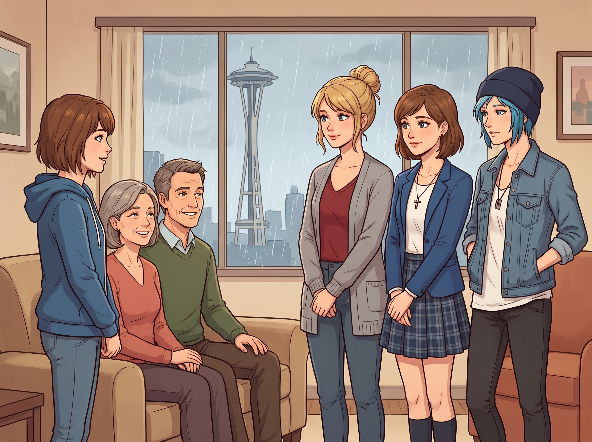
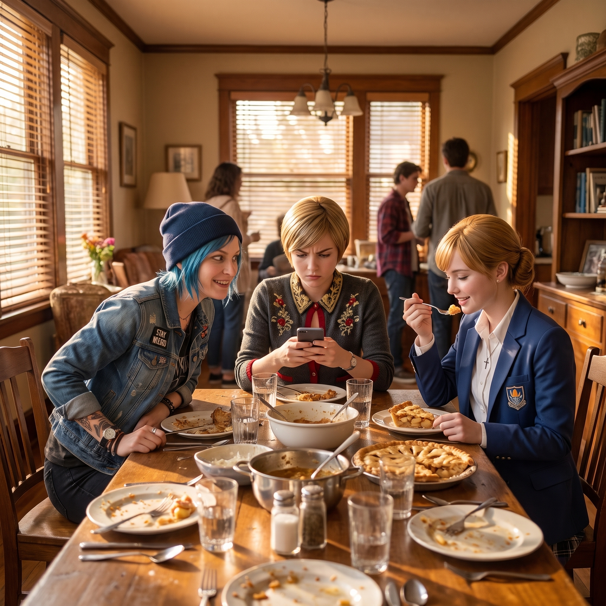

長輩收割機與土撥鼠


新基地落成不久，Max 的父母便得知了女兒和朋友們搬遷到華盛頓州的消息。Ryan 和 Vanessa 特地開車繞了半個州，帶著滿滿一箱自製果醬、羊毛毯和一台嶄新的空氣清淨機，親自來到那片懸崖邊的鐵道車廂探望，還在臨走前反覆叮囑幾人有空一定要回西雅圖家裡坐坐。
於是，趁著工坊難得的休假週末，四人開著車專程回訪西雅圖，正式將 Kate 和 Victoria 介紹給 Max 的父母。現場迅速演變成了一場長輩面前的極限拉扯、狐假虎威爆料與天使鈍角暴擊的爆笑溫馨大戲。
Max 的父母是典型的美式中產溫暖父母：熱情、開朗、情緒穩定、甚至帶著一點點可愛的嘮叨。面對這樣的長輩，四人的互動擦出了極其精彩的火花。
一、初次見面：名媛的極致偽裝 vs 天使的長輩收割機
Kate 穿著素雅的針織衫，雙手遞上親手烘焙的洋甘菊蔓越莓司康餅和一束自己種的乾花，禮貌地問候。Vanessa 媽媽當場被萌化，一把拉住 Kate 的手揉個不停，直呼「這簡直就是童話裡走出來的天使女孩」，並非要拉著她去廚房參觀自己的花園香草。
面對 Max 的普通工薪/中產父母，Victoria 雖然收斂了平日的傲慢，但骨子裡的高定氣場依然全開。她遞上了一盒西雅圖頂級私廚定制的黑松露巧克力，背脊挺得筆直，用近乎接待外賓的優雅微笑說道：「Caulfield 先生、夫人，感謝你們的熱情招待。Max 在二號車廂的視覺藝術管理上展現出了極高的天賦。」
Ryan 爸爸笑呵呵地拍著大腿：「哎呀，這姑娘說話像電視裡的新聞發言人一樣！放鬆點孩子，來嘗嘗叔叔烤的熱狗！」
名媛優雅的嘴角微不可察地抽搐了一下，但為了在 Max 父母面前維持完美教養千金的形象，只能硬生生咽下所有挑剔，雙手接過油滋滋的熱狗。
二、Chloe 的作死狂暴爆料
看到 Victoria 為了維持端莊大家閨秀的形象而強行微笑、不敢發作，一旁叼著吸管的 Chloe 壞心思瞬間拉滿。
Chloe 一把摟住 Ryan 爸爸的肩膀，故意指著 Victoria，大聲開啟了歷史黑料放送：
「Ryan 叔叔！您不知道吧？上次在波特蘭市集，這位優雅的 Chase 大小姐因為打扮得像個三十九歲的西雅圖董事長，被果醬攤老太太當場誤認為是 Kate 的親生母親！我們差點要給她頒發『俄勒岡傑出母愛獎』呢！」
「而且您別看她現在吃熱狗這麼斯文，那天她氣得直接把幾千刀的名牌高跟鞋一脫，換上橡膠底工裝鞋，手裡揮舞著兩公斤重的《資產管理年鑑》，在舊鐵道上像個特種兵一樣把我追殺了整整九條街！」
客廳裡，Max 捂著臉不敢看，Ryan 爸爸和 Vanessa 媽媽聽得前仰後合，笑得眼淚都出來了：「真的嗎？看不出來 Victoria 這麼有活力啊！年輕人就該這樣打打鬧鬧！」
此時的 Victoria，雙手捧著紙盤，指關節捏得發白，臉上的名媛假笑已經僵硬得像打了肉毒桿菌。她在桌子底下狠狠踩了 Chloe 一腳，但當著 Max 父母的面，只能從牙縫裡擠出極度溫柔、卻帶著刺骨寒意的笑聲：「呵呵……Price 小姐真是幽默，她平時在工坊裡就喜歡進行一些充滿藍領想像力的戲劇化創作呢。」
三、Kate 的隱藏級腹黑鈍角補刀
就在 Victoria 試圖用「這只是玩笑」來強行挽回名媛尊嚴時，正端著熱茶走過來的 Kate，眨了眨那雙無辜的大眼睛，發動了她標誌性的真誠核打擊。
Kate 坐在 Vanessa 媽媽身邊，非常認真、極其深情地替 Victoria 辯解：「叔叔、阿姨，其實 Chloe 說得有些誇張了……但 Victoria 真的特別有長輩的責任感！」
名媛心裡剛升起一絲「Marsh 終於說人話了」的感動，Kate 的下一句話就讓全場再次陷入死寂：
「那次在市集上，雖然老奶奶認錯了年齡，但 Victoria 一點都沒有嫌棄我。她甚至為了安撫大家，一口氣把攤位上整整二十四罐草莓醬全買下來了——就像全天下最寵溺孩子的媽媽一樣，特別大方、特別有威嚴！」
「噗——咳咳咳咳咳！」正在喝啤酒的 Ryan 爸爸一口酒全噴在了餐巾紙上。
Vanessa 媽媽笑得拍著沙發：「天啊，這不就是我們家 Max 小時候要買玩具時我的做法嗎！Victoria，妳太體貼了，以後這幾個孩子有妳看著，我們一百個放心！」
Victoria 手裡的熱狗差點被捏成肉泥。名媛緩緩閉上眼睛，在心裡默唸了一百遍《資產法》和《教養守則》，才勉強忍住沒有當場掀翻客廳的茶几。
四、Max 父母的定調與最後的溫馨
看著眼前這一幕——笑到快要從沙發上滑下去的 Chloe、滿臉無辜真誠遞紙巾的 Kate、氣得快要靈魂出竅卻依然保持坐姿優雅的 Victoria，以及在一旁手忙腳亂瘋狂打圓場的 Max。
Vanessa 媽媽走上前，溫柔地把四個女孩都抱進了懷裡：「好了好了，不管你們誰是媽媽、誰是土撥鼠。看到 Max 能有你們這群在風暴裡互相支撐、隨時能把後背交給彼此的好朋友，我們真的很安心。」
Ryan 爸爸也笑著端上了剛烤好的超大份蘋果派：「來，孩子們，不管在外面多累、搬家有多辛苦，到了西雅圖，這裡永遠是你們隨時可以回來蹭飯的安全屋。」
夕陽穿透西雅圖老房子的百葉窗，照在長桌前吵吵鬧鬧的幾人身上。Chloe 依舊在對著 Victoria 挑眉挑釁，Victoria 已經在暗中用手機備忘錄草擬「二號車廂回去後的體能拉練計劃」，Kate 甜甜地吃著派，而 Max 則舉起相機，將這份充滿了煙火氣、包容與無厘頭歡笑的家庭時刻，永遠烙印在了光影之中。